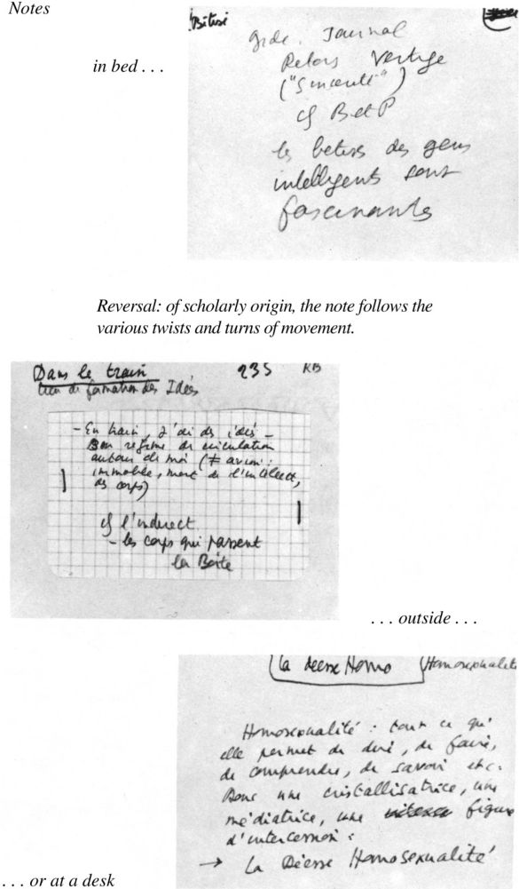

尽管有着许多离经叛道的行为，巴特还是花费了大量时间去完成批评家的传统任务——对作家的成就进行阐释和评估。他写了许多前言和导论，点评的对象既有当代的实验性写作，也有经典的法语作品。他最重要的批评作品可以分为两大类：一类是他的著作，他在书中分析了某个作家（比如，米什莱、拉辛和萨德）的全部作品；另一类是他为了宣扬先锋派作家（比如，布莱希特、罗伯——格里耶和索尔莱斯）所写的文章，他在这些文章中满怀激情地提出了文学在当代的特定任务。
巴特向来善于制造惊奇，他早期所写的关于米什莱的著作展示了他在这方面的天赋。《写作的零度》称赞了具有自觉意识的现代主义文学，人们因此以为巴特接下来会转向加缪或者布朗肖——在他的同时代人中，这两位一直都在尝试他所描述的反文学性的文学。然而，巴特却选择了儒勒·米什莱，19世纪早期一位多产的通俗历史作家。米什莱是个风格多变的作者，同时也是个热忱的爱国者兼法国大革命的崇拜者。此外，他对于古怪神秘的中世纪也情有独钟，在他所创作的多卷历史作品中记录了这一时期的故事。在米什莱的作品中，找不到任何巴特倡导的自觉约束，但他却是巴特最喜欢的作家之一（另两位是普鲁斯特和萨德）。巴特自称，他在疗养院的时候读了米什莱的全部作品——这是个艰巨的任务——并且摘抄了所有让他感到愉悦或者给他留下深刻印象的句子。“排列这些卡片的时候，有点像人们在玩一副牌，我忍不住想要描述这些主题”（《回应》，第94页）。
这些描述最后变成了《米什莱》（1954），书中探讨了巴特在《写作的零度》中所说的风格 ：在米什莱的虚构世界中呈现出的“各种痴迷情形所组成的有序网络”。他没有理睬米什莱的思想，而是偏好他所谓的“存在主义主题”，即他的写作对于某些物质和属性的强调，包括鲜血、温暖、冷淡、丰富、平滑、液化（论法国大革命的一个著名片段把冷淡的、了无生气的罗伯斯庇尔与温暖的、充满活力的暴民进行了对比）。巴特写道，“把米什莱的存在主义主题去除之后，就只剩下一个小资产阶级”，不值得关注（第88/95页）。
《写作的零度》强调文学形式的意识形态功能，而《米什莱》则抛开这样的问题，转而描述一个由对立的属性和物质所组成的宇宙。因此，巴特所写的这部著作与法国批评的发展有着紧密联系：当时，加斯东·巴什拉提出了通过对于四种元素（土、气、火、水）的“精神分析”，可以总结出一套范式，用来讨论物质对于诗学和非诗学思维的重要性。巴特声称他没有读过巴什拉（这的确很有可能），但巴特的作品可以看作是日渐壮大的现象学批评的一部分，这一批评不是把文学作品看作有待分析的人工制品，而是看作意识的呈现：对于世界的意识或者体验，读者被邀请加入其中。当时，乔治·布莱的《人类时间研究》（1950）和《内在距离》（1952）刚出版不久。让·斯塔罗宾斯基刚刚出版了《孟德斯鸠》（1953），这本书与巴特正在写作的《米什莱》属于同一套丛书。次年，现象学批评中所谓的“日内瓦学派”的另一位成员阿尔贝·贝甘出版了这套丛书中的另外两本（论帕斯卡和贝尔纳诺斯）。或许最为重要的是，同期出版的让——皮埃尔·理查德的《文学与感知》公开提出了《米什莱》所隐含的假设：“一切事物始于感知，肉体、客体和氛围构成了对于自我来说最为重要的空间。”正是在这里，在身体感知中，出现了文学形式、主题和意象。

图5 笔记。
《米什莱》的推出似乎是现象学批评所掀起的新浪潮的一部分，但是从巴特的后期作品来看，《米什莱》有两个显著特点值得注意。首先，巴特所采取的方法使他能够将米什莱的写作变成一系列视觉片段，他没有把写作的兴趣与连贯性、发展和结构相联系——这些都是米什莱（作为一名历史学家）的作品不容否认的特征——而是把它与文本片段的愉悦，与读者从零星的句子及其意象中能够得到的愉悦联系在一起。其次，这种文本愉悦（它引导巴特把这些文本作为研究对象，以间接的方式来评论）与身体有关。写作与身体对于空间和物质的经验之间产生了联系。
后来，巴特尤其关注他本人的写作与身体经验之间的关系，仿佛身体感知可以被当作起源或依据。 [7] 虽然现象学批评关心的是体验或现象的显现 （世界作为它呈现在意识面前的样子），它却使批评家把他们要讨论的身体感受当作了一种自然依据。经过高度加工的人工制品被追溯到基础的、前反思的感知，后者被当作一种自然起源。巴特最锐利、最有成效的作品反对那种将文化变成自然的神秘化倾向。考虑到他在后期作品中策略性地将身体作为写作的依据，我们就不得不提出这样的问题：这是否也是同一种类型的神秘化操作？表面看来，《米什莱》与巴特在1954年所显露的文学与政治倾向相去甚远，但它所探寻的立场在他后来的作品中将再次出现。
和《米什莱》一样，《论拉辛》也把重点放在一个虚构的世界，但它既不是一种痴迷于句子和片段的写作，就像《米什莱》那样，也不是一种以物质和属性为重点的现象学描述。相比拉辛的语言和想象，巴特对于束缚人物的悲剧性宇宙更感兴趣，他用“一种温和的精神分析语言”，展开了“对于拉辛笔下人物的人类学研究”。他问道：什么样的生物居住在这个悲剧性的宇宙中？他把这些戏剧叠合在一起，把它们看作是拉辛的悲剧体系所呈现出的不同面貌，并且试图辨认出其中的根本关系，正是这种关系创造了戏剧处境和人物。他特别强调权威、敌对和爱这三种关系的结合，这些关系可以在原始人群的神话中找到，弗洛伊德等人已经对此有所论述：儿子们团结起来，杀死了统治他们并且不许他们娶妻的父亲，他们最终建立了一种社会秩序（以及乱伦禁忌）来控制他们之间的敌对状态。“这个故事，虽然是虚构的，却是拉辛戏剧作品的全部”（第20/8页）。把所有的戏剧作品组合在一起，构成一部宏大的悲剧，“你就会发现这个原始人群中的人物和行为……只有在这个古老寓言的层面上，拉辛的戏剧作品才能找到它们的一致性。”在表层之下，“陈旧的基石就在那里，随手可得”，这些人物正是根据他们在力量的总体分布中所占据的位置来获取他们各自的属性的。
在《文艺批评文集》中，巴特提出，作家“假定意义的存在，也就是说，作家创造形式，由世界来填充其中的内容”（第9/xi页）。这种看法把批评当作一种填充的艺术，或者我们应该说，为了和巴特把作家视为公共实验者的看法保持一致，批评家以填充的方式进行实验，以作家或作品为对象，尝试各种可能的语言和背景。这就是巴特在《论拉辛》中所持的观点：“让我们以拉辛为对象进行尝试，得益于他的沉默，我们可以尝试本世纪所有可供使用的语言”（第12/x页）。拉辛保持“沉默”，因为他创造了形式，这些形式假定但并不决定意义。他的戏剧是“一个空洞的场所，永远向意指意义开放”。如果说他是最伟大的法国作家，那么“他的天赋并不在于让他获得成功的那些长处，而是在于独一无二的保持无限可能的技艺，这种技艺让他永远停留在任何批评语言的应用范围之内”（第11/ix页）。
把伟大的法国经典称为“一个空洞的场所”，这是一种刻意为之的无礼举动，就像巴特尝试用精神分析语言来描述这位作家一样，要知道后者通常被认为是纯正、端庄和智巧的典范。这样做的结果就是，巴特为我们奉上了一种极具争议的、混杂的解读，他把自己感兴趣的三种方法（对于虚构宇宙的现象学描述、对于体系的结构性分析，以及对个别作品进行新的主题性阐释时对于当代“语言”的利用）生硬地结合在一起。结果，他对“陈旧的基石”的描述变成了结构性分析，他寻找的不是属性，而是差异和关系，这样一来，他对于虚构世界的描述就丧失了许多现象学的特色。同样，他试图利用神话和精神分析的语言对每部戏剧进行不同寻常的主题性解读，但这种尝试破坏了他的结构主义分析，后者把这些戏剧当作一个由形式规则所组成的体系的产物。《论拉辛》是一部充满争议的作品，每个读者都会从中得出自己关于拉辛的想法；同时它向公众展示，文学批评（或者至少说新批评 ，即受到理论启发的批评作品）也可以成为迷人的阅读体验，但对于巴特或其他人来说，这并不是一个理想的范式。
在《萨德、傅立叶、罗犹拉》中，巴特再次把作家的全部作品当作一个体系，他强调并修改了《论拉辛》曾经尝试过的两个方面。巴特认为人们可以总结出一个作家全部作品的“语法”，找出其中的基本要素和结合法则，这是他从语言学借鉴来的想法，但在《论拉辛》中，这个想法变得相对不太重要，它体现了作品背后潜藏的简化倾向。在《萨德、傅立叶、罗犹拉》中，语言学类比完全发挥了自身的作用：这三位作家被当作“logothetes”，或者说，特殊“语言”的创造者。萨德对于性冒险不厌其烦的叙述，傅立叶创造的乌托邦社会，罗犹拉对于精神修炼的提议，都展示了对于区分、排序和分类的癖好；它们建立起类似语言的体系，在它们所表述的领域中产生意指行为。
巴特写道：“在萨德的作品中有一种情欲的语法，一种色情兼语法体系，包括色情要素和结合规则”（第169/165页）。对于萨德来说，情欲想要“根据精确的规则，把特定的邪恶行为结合在一起，以便从这些行为系列和行为集合中创造出一种新的‘语言’，这种语言不再是口头的，而是通过行为来表达，这是一种罪行的语言，或者说，一种新的爱情代码，和优雅的爱情代码一样精致”（第32/27页）。情欲代码的最小单位是姿态 ，“最小的可能性结合，因为它联系的对象只有一个行为和它的身体作用点”。除了性姿势之外，还有多种“操作因素”，比如：家庭关系、社会等级和生理变量。姿态可以相互结合，构成各种“操作”，或者说，构成复合性的情欲场景。当运作随着时间流逝而发生变化时，它们就变成了“人生片段”。“所有这些单位，”巴特继续写道，
第34——35/29——30页
除了让语言学范式发挥更充分的批评作用，《萨德、傅立叶、罗犹拉》修改了《论拉辛》的另一个方面。在前一部作品中，巴特使用性语言或者精神分析语言来分析拉辛及其剧中的人物，这种做法可以看作是一种尝试，他想让崇尚拉辛式典雅风格的法国公众感到震惊。但在《萨德、傅立叶、罗犹拉》中，巴特表明他特别感兴趣的是当不协调的语言相互接触时所产生的效果，比如语言学的专业术语与萨德的性欲描写相互摩擦时所出现的情形。这不是对文化丰碑的嘲弄，而是对不同语言相结合的效果进行实验。 [8]
与《米什莱》和《论拉辛》一样，《萨德、傅立叶、罗犹拉》表明，尝试用本世纪的语言来分析某位作者，并不是要说明他的作品关系到当前的实际问题，从而使这些作品变得与我们“相关”。那种做法属于主题性研究，比如关注拉辛的爱情心理学或者米什莱的政治观点。与此相反，巴特对于当代语言的实验在总体性上强调了他所研究的写作文本的怪异特质——米什莱的迷恋，拉辛的幽闭宇宙，萨德、傅立叶、罗犹拉三人对于分类的狂热。巴特写道，最后这三个人没有一个“能让人忍受，他们每个人都使愉悦、快乐和交流取决于一种没有变化的秩序，或者（更糟糕的情况下）取决于一种结合的体系”（第7/3页）。巴特在对这些作品进行分析时并没有找出相关的主题，而是想要把文本从不同作者（傅立叶、罗犹拉、萨德）的视野和目的（社会主义、信仰、邪恶）中“解放出来”，并且盗用 它的语言，“把文化、知识和文学的旧文本变成碎片，并且将它的特征散布到难以辨认的表述中去，就像人们在掩饰盗窃来的物品时所做的那样”（第15/10页）。这显然是一项不同寻常的批评计划，它对于怪异的特质远比熟悉的内容更感兴趣，并且在碎片中找到了愉悦。引人注意的是，巴特无意去描述个别作品的轮廓或架构。他盗用这些作家的语言，目的不是在于阐释和评价这些业已完成的作品，而是在于阐明写作的实践以及这些实践对于意义和秩序的潜在影响。
在巴特身为批评家所从事的另一项主要活动（即他对于某些先锋文学实践的宣扬）中，这一点也很明显。他的最初事业是一种戏剧书写 ，20世纪50年代，他在布莱希特身上发现了文学形式的社会用途。在大学里，巴特创立了一个演出希腊戏剧的团体。战后，他又协助创办了《大众戏剧》杂志，抨击当时的商业剧，倡导关注社会和政治话题的戏剧。萨特曾写过政治戏剧，但巴特试图构想出一种在语言和形式上并不简单化的政治戏剧。1954年，当布莱希特带着他的柏林剧团来到巴黎的时候，巴特找到了他心目中的英雄。据他透露，“《大胆妈妈》的现场演出以及节目单中布莱希特论戏剧的一段话让他热血澎湃”（《访谈录》，第212/225页）。1971年，巴特写道：“布莱希特对于我依然极为重要，现在他不怎么流行了，他一直都没有成为先锋派的一员，虽然人们曾经想当然地以为他会加入，但这反而让他变得更为重要。我之所以把他视为典范，不是因为他的马克思主义文艺观，也不是因为他的审美观念（虽然这两点都很重要），我所看重的是这两者的结合，也就是将马克思主义分析与关于意义的思考结合在一起。他是一个对符号的效果 进行过深入思考的马克思主义者：这非常罕见”（《回应》，第95页）。
布莱希特提供了巴特一直在寻找的新的戏剧实践，同时也提供了一种理论视角，帮助巴特来解释西方传统戏剧的问题所在。虽然巴特历年来关于戏剧的论述中没有提及布莱希特的名字，但这些文字体现了布莱希特的陌生化（或者说，异化）概念。巴特的基本看法是，戏剧要想产生效果，需要的不是与主要人物产生移情性认同，而是要保持一定的批评距离，使我们可以判断和理解他们的处境。巴特认为，在布莱希特的《大胆妈妈》中，“重点就在于告诉那些把战争当作命中劫数的人们，比如大胆妈妈，其实战争就是一种人类现象，不是宿命……因为我们看到了 大胆妈妈缺乏理性判断，我们看到了 她没有看到的潜在因素……通过这种戏剧化的吸引观众的手段，我们就明白，正是她所没有看到的潜在因素让大胆妈妈成为了受害者，而这个潜在因素是一种可以挽救的罪恶”（《文艺批评文集》，第48——49/334页）。
另一个例子：在伊利亚·卡赞导演的电影《码头风云》中，观众对于主演马龙·白兰度的认同减弱了这部影片的政治力量，虽然腐败的工会被挫败，大人物也被加以嘲讽，但到了电影末尾，当白兰度站到雇主和体系一边时，我们也和他一起站了过去。巴特写道：
《神话学》，第68——69页/《埃菲尔铁塔》，第40——41页
从布莱希特身上，巴特学到了三点。首先，布莱希特从认知（而不是情感）的视角来看待戏剧（这可以推及到他对待整个文学的态度），因此他强调意指意义的机制。他质疑统一场景这个概念，告诉巴特“表述的代码必须相互分离，从胶着的有机状态（这是传统西方戏剧所秉持的观念）中松脱开来”（《意象、音乐、文本》，第175页）。“戏剧艺术的责任并非在于表述现实，而是在于意指现实”（《文艺批评文集》，第87/74页）。在道具、服装、姿态和演出手段方面，不要想着“自然表达”。用几面旗帜来意指一支军队胜过用数千面旗帜来真实地表现。
其次，戏剧应当探索符号的任意性，让观众注意到符号的人为性质，而不是对其加以掩饰。这是布莱希特提出的陌生化 原则的巴特版本。演员们在演出拉辛的戏剧时，应该像朗诵诗歌一样来念他们的台词，而不是让这种形式化的、高度有序的语言看起来像是心理状态的自然表露。巴特引述并赞同布莱希特的想法，认为演员在念台词的时候，不要装作他们就是人物本人在即兴发言，而是要演得“像是在引用别人的话”。他赞赏许多大胆表露虚构本质的戏剧实践，从《神话学》中描述的职业摔跤的场景到《符号帝国》中大肆赞扬的日本歌舞伎和文乐木偶戏表演。他提出，任何戏剧作法只要放弃了以人物和心理状态为重点的戏剧理念，转而将人物处境和外在表现作为重点，都会具备消除神话的政治潜力。演员、剧作家和制作人应该注意巴特最喜欢的口号：我指着我的面具前进。
第三，“布莱希特肯定 了意义，但没有加以填充 ”（《文艺批评文集》，第260/263页）。他的陌生化技巧被用来创造“一种意识（而非行动）的戏剧”，或者更确切地说，他的戏剧是关于“无 意识的意识 ，那些遍布舞台的无意识的意识——那就是布莱希特的戏剧”，让观众意识到问题，但不像政治宣传那样提倡某种解决方案。即便这种看法不完全符合布莱希特的戏剧观，这至少反映了巴特本人的文学设想，重要的不是告诉我们，某些事物意味着什么，而是让我们注意到意义如何产生。巴特的戏剧评论体现了这一看法，他使用的语言采用了一些根本性的对比：表面与深度，外在与内在，轻与重，批评距离与移情性认同，面具与人物，符号与现实，不连贯性与连贯性，空洞或含混与意义的充实，虚构性与天然性。能够以轻巧的风格来获取政治效果吗？布莱希特似乎为我们提供了这种可能性。
就在布莱希特让巴特感到“热血澎湃”的同时，他也成为了小说家阿兰·罗伯——格里耶的坚定支持者，《文艺批评文集》中有四篇文章以罗伯——格里耶作为评论对象。巴特宣称：“终我一生，让我感到痴迷的是人类如何让世界变得可以理解。”罗伯——格里耶的小说探索了这一过程，他的作品以一种英勇但徒劳的方式，想要消灭意义，从而让我们注意到我们已经习以为常的、让事物变得可以理解的方式。在《写作的零度》中，巴特提出，采取一种书写 ——“一种设想文学的方式”，“文学形式的一种社会用途”——具有潜在的政治影响。形式实验可以成为一种承诺的模式，就像尝试写作反文学性的文学，并取得写作的零度那样。加缪对于文学的反叛并没有走多远，因为他把世界的无意义变成了一个主题 。事物依然具有意义：它们意指“荒诞性”，读者和评论家迅速采纳了这个词。在巴特看来，罗伯——格里耶在尝试一种更为激进的做法，想要破坏我们关于可理解性的假定并且阻挠我们的常规阐释步骤，从而达到清空意义或者将其暂时搁置的目的。那些没有必要的详尽描写、空洞的人物和不确定的情节乍看之下难以卒读，换句话说，根据我们对于小说和世界的传统假设，这些内容难以理解。但是罗伯——格里耶“拒绝故事、逸事、动机心理学和事物的意指意义”，在巴特看来，这样的做法向我们的经验秩序发起了强有力的挑战。
《文艺批评文集》，第199/198页
这段论述强调了两点。首先，巴特把罗伯——格里耶的作品，连同作品中以阻止意义为目的的描述，看作是完全表面的文本。传统上，深度和内在性被认为是小说的领域，小说要深入人物内心，潜入社会内部，以获取其中的本质，并相应地选择细节。罗伯——格里耶的读者试图揣摩人物的心理和动机，并且对细节进行阐释，但这对于深入理解作品并无帮助：只不过让这些文本变得平常乏味罢了。
其次，巴特称赞罗伯——格里耶，因为后者采取了一种特殊的书写， “破坏了叙事的魅力”。通常小说都包含故事：读小说就是要遵循某种故事发展。令人惊讶的是，巴特对于故事毫无兴趣。他喜欢狄德罗、布莱希特和爱森斯坦，因为这些人都偏好场景胜过故事，偏好戏剧场面胜过叙事发展。巴特喜欢片段，设计了各种方式把具有叙事连贯性的作品变成片段。不过，在罗伯——格里耶的小说中，巴特找到了抗拒叙事秩序的文本。例如，要想把一个故事拼凑起来，从而判断出哪些是“真正发生”的事，哪些是记忆、幻觉或叙事者的插叙，这往往很难。读者花费了很大力气来组合一个故事，这一过程迫使他们意识到达成叙事秩序的困难；但如果人们真的组成了一段叙事，就等于否定了对叙事的挑战，没有抓住其中的关键。
巴特对这两种策略（消除深度和打乱叙事）尤其感兴趣。他早年所写的文章《客观文学》和《没有想象力的文学》极力称赞喜欢描写琐碎事物的罗伯——格里耶，认为后者完全投身于对事物进行客观的、非人性化的描述，而那些事物就简简单单地在那里 存在着。但随着读者逐渐熟悉罗伯——格里耶的小说，他们显然能够把这些文本复原成文学作品，并且得出它们的意义，尤其是通过设想一位叙事者。如果作品中的片段被看作是一位受到困扰的叙事者的思绪，那么那些最机械化的描述，最令人困惑的反复或脱漏，都具有了某种意义。带有精确的重复描述的《嫉妒》可以被看作是一位患有妄想症的、痴迷的叙事者对于周围世界的感知。《在迷宫里》可以被解读为一位患有健忘症的叙事者所说的话。在他的作品里，我们得到的不是“客观文学”，而是一种关于主体性的文学，整部作品完全发生在一位精神不正常的叙事者的头脑里。
巴特曾接受邀请，为一本关于罗伯——格里耶的研究著作撰写序言——这本书恰恰做了巴特在文章里强调的不该做的事：重构情节、假定叙事者、辨认象征模式和提供主题性阐释——巴特采取了一个不同的立场。他在《罗伯——格里耶的位置？》一文中提出，有两个罗伯——格里耶：一个是客观主义者，另一个则是人文主义者（或者说，主体论者）。他可以从任何一个方面来解读，“最终起作用的是这种含混性，这关系到我们，这承载着他的全部作品中的历史意义，虽然这些作品看似拒绝历史。这种意义是什么？就是意义的对立面，也就是说，是疑问 。事物究竟意指什么？这个世界究竟意指什么？”（《文艺批评文集》，第203/202页）。“罗伯——格里耶的全部作品成了某个社会所经历的意义的磨难”，社会与这些作品之间的关系变化说明了这一点。
巴特在《文艺批评文集》的序言中写道，文学的任务并非如人们通常以为的那样，要把不可表述的内容表述出来 ，那样的文学将沦为他所鄙夷的“灵魂文学”。文学应该尝试“把可以表述 的内容变得难以表述 ”，要质疑我们自动传递或接受的意义。因此，罗伯——格里耶对于巴特来说具有典范性，后来收录在《作家索尔莱斯》中的多篇文章又把另一位先锋派散文的创始人菲利普·索尔莱斯塑造成同样的角色，认为他试图反书写 在之前的话语里被写就的世界。作家竭力“要从世界给予他的初级语言的泥泞中区分出一种次级语言”（《文艺批评文集》，第15/xvii页）。这种次级语言——或许秩序井然，或许典雅得体——在巴特的设想中，应该是轻盈且干净的，而不是沉重笨拙或充满意义的。
在巴特对于先锋派文学的倡导中，语言的伦理性具有核心地位，这或许能解释他的批评所呈现出的令人困惑的特点。虽然巴特有着广泛的文学品味——他欣赏现代作家，同时也欣赏老派文人；他喜欢文风简洁的作者，却也喜欢浓墨重彩的写法——但他对于诗歌毫无兴趣。除了拉辛，他从来没有评论过诗歌，而他对于拉辛的诗作也只是几笔带过。没有哪种全面的诗歌理论能解释他忽略诗歌的做法，但各种连带的点评以及《写作的零度》其中一章“存在诗歌写作吗？”或许能让我们对这个令人好奇的谜团有所了解。
有几处点评表明，巴特把诗歌与象征以及意义的丰富性联系在一起，同时认为诗歌试图创造出有理可据的符号（而不是任意的符号），因此他将诗歌看作是文学性的某个方面，而这个方面正是布莱希特、罗伯——格里耶和索尔莱斯等英雄试图攻击的对象。不过，在《写作的零度》中，他采取了不同立场，提出不存在诗歌写作 ，因为古典诗歌并不基于语言的特殊用法（它是无所不包的古典书写 的一部分），而同时，现代诗歌是“一种[特殊]语言，在其中一种强烈的驱动力为了寻求自治，摧毁了所有伦理范围”。人们或许会期待巴特热衷于他所说的“充满了裂缝和闪光，充满了缺位和饥渴的符号，但没有固定或稳定意图的话语”，但他接下来却把注意力转到其他地方，他认为现代诗歌试图摧毁语言，并把话语简化为“作为静态事物的词汇”（第38——39/48——51页）。在《神话学》中，他提出，诗歌试图取得一种前符号状态，在这种状态下，它能够呈现事物本身。
图6 拿着雪茄的巴特。
巴特不相信诗歌呈现出一种未经中介的现实，而且他把一种可疑的抱负强加在诗歌之上，这看上去和喜欢描写琐碎事物的罗伯——格里耶的抱负非常相似。因此，人们觉得还有其他因素在起作用，在巴特的批评实践中有其他原因导致他忽视了诗歌。虽然《写作的零度》否认存在诗歌书写 ，把诗歌搁置起来，但我们也可以争辩，事实上存在一种诗歌书写 ，它具有丰富的内涵、浓度和意义的深度，这些因素具有强大的影响力，甚至能破坏那些最坚决的反诗性的诗歌作品。像“我昨天去了镇上，买了一盏灯”这样的句子，在被当作诗歌来解读的时候，就利用了象征代码（照明、商业）和对于意义的惯性设定，从而创造出丰富的意指可能性。（如果这首诗只有这样一个简短的句子，我们可以在缺乏其他陈述这一事实中发现意义。）在《符号帝国》中，巴特写道，对于西方人来说，俳句是一种诱人的形式，因为你记录单个印象，“你的句子（不管什么样的句子）都会道出一种经验，释放一个象征符号，你轻易就能造成一种思想深邃的印象，而你的写作也将变得充实”（第92/70页）。我们西方的诗歌书写 假定了象征的丰富性，并且引领我们对俳句进行相应的解读（而巴特却设想，在他的乌托邦式的日本，这些俳句一直保持着空无状态）。对于西方人来说，很难在诗歌中避免意指的充分性，而在长篇散文的形式中，象征意义带来的压力就没那么大了。巴特把诗歌排除在他的批评领域之外，试图把文学从与之相关的意义的丰富性中解脱出来。
巴特还以另一种方式把诗歌当作替罪羊。在《神话学》的结尾处，他写道：“在广义上，我对于诗歌的理解是，寻找事物不可剥离的意义”（第247/151页）。他让诗歌以神秘的方式成为（对于他来说）对前符号的自然或真相的追寻，由此他可以通过搁置诗歌，把这种追寻驱逐出文学领域。在《何为文学？》中，萨特区分了诗歌（和语言一起游戏）和散文（使用语言来描述世界），从而通过忽略诗歌，把语言游戏排除在外。巴特在区分这两者时所采用的术语完全不同于萨特的用法——对于巴特来说，散文 进行着语言实验，而诗歌则试图超越或破坏语言——但从结构上讲，巴特所做的是同一码事：把文学的某些重要的总体方面等同于诗性（这种做法值得商榷），从而可以拒绝讨论诗歌，并进而忽略这种与诗歌相关的属性或设想。
此外，还有一个因素。在法兰西学院的就职演说中，巴特宣称：“我所理解的文学 ，不是一类或一系列作品，甚至不是一个商业化的教学领域或范围，而是对于一种实践的痕迹所进行的复杂的铭刻：那种实践就是写作”（《就职演说》，第16/462页）。他感兴趣的是写作实践，而不是完成的形式，因此他不怎么重视十四行诗，更喜欢长篇散文，这样他就可以从中选出自己喜欢的部分，创造出强有力的、可以在他的批评话语中调用的片段。他没有去解释那些具有精致结构的形式，而是宣扬一种符号活动。毫无疑问，这就是为什么他所写的许多关于文学的作品采取了种种非正统形式的原因。